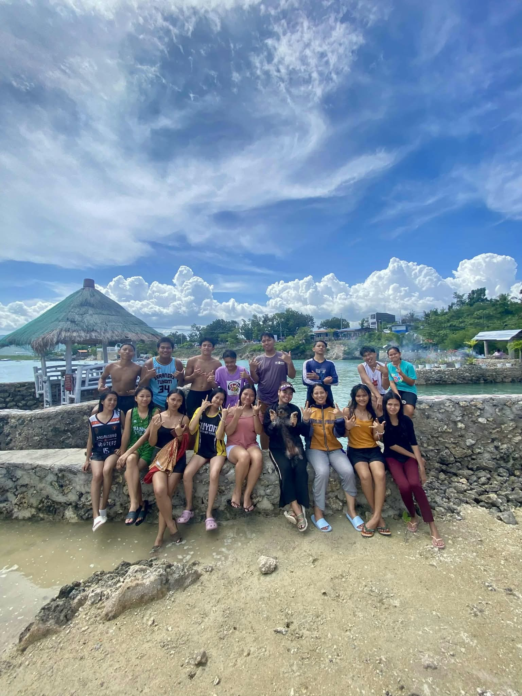
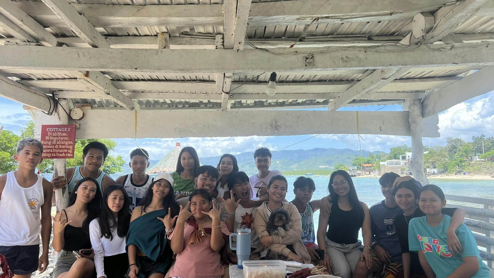
This was way back in my Grade 11 where my senior highschool journey started. Together with our adviser, we went on an outing to create memories as a remembrance of our bond and to cherish the time while we are still in senior highschool.
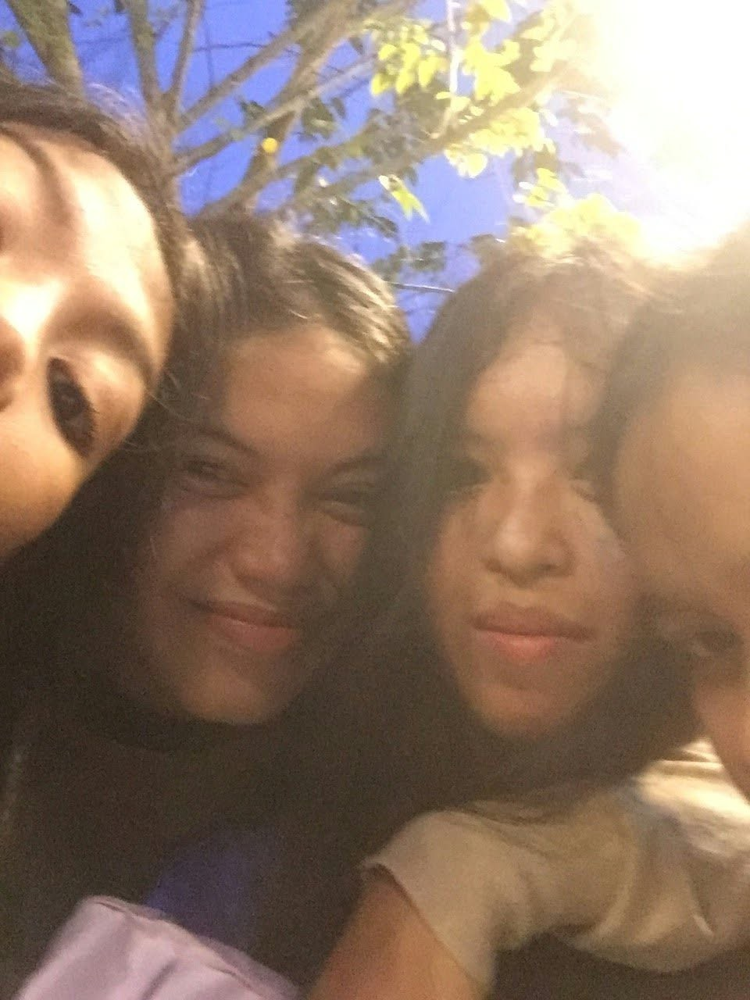
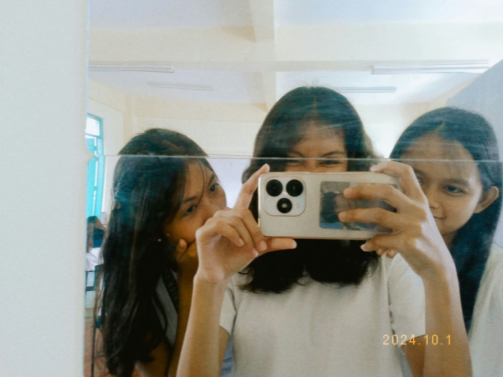
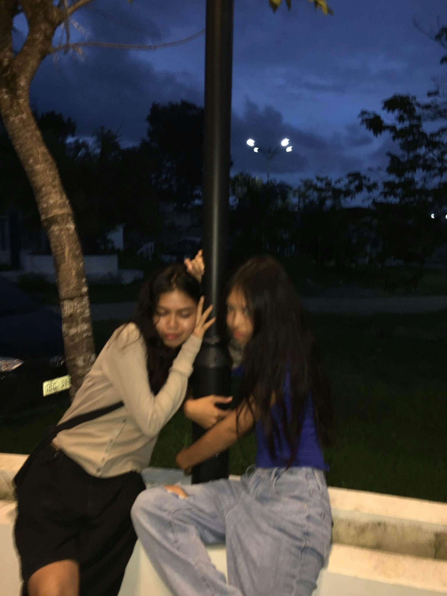
These people made my highschool life fun and complete. Not even a single boring day. They are funny, kind, and pretty. They are the people who I am with since junior highschool. We may not be in the same school now, but we are still updating each other. I miss them so much.𖹭.ᐟ
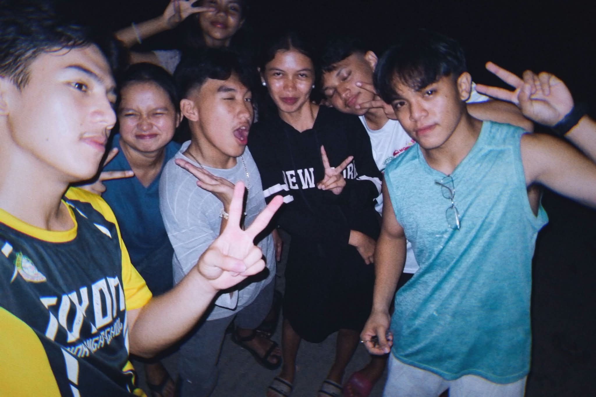
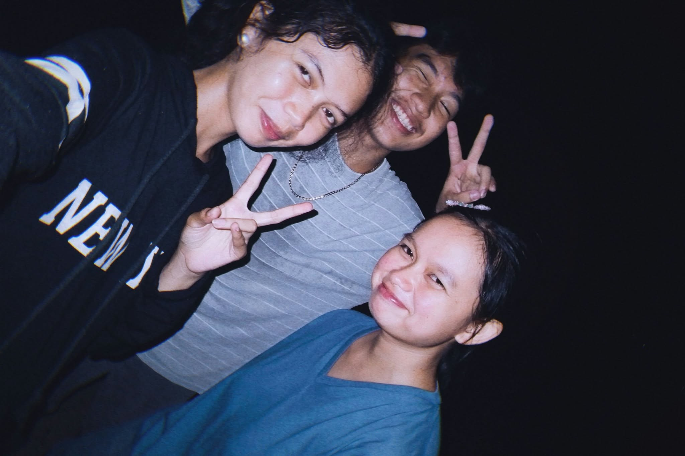
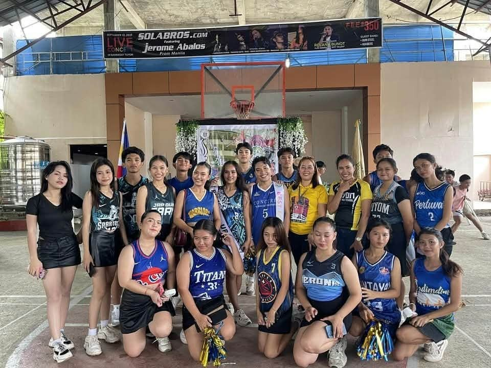
From being classmates during senior highschool to becoming college students chasing different paths. We used to practice our dance performances late at night. Rain or shine or even earthquake could not hinder us on our practices. I'm super grateful to have these people be part of my highschool life.
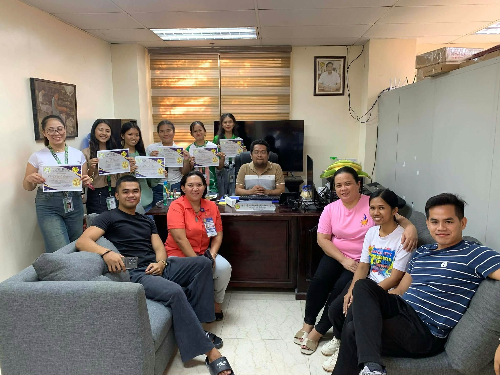
I happened to complete my work immersion duty at the Business Permit and Licensing Office in Carcar City Hall. We had a lot of fun and the employees are kind and accomodating. Their job really fit them as they will always face business and license related concerns. What i did during my duty hours are:
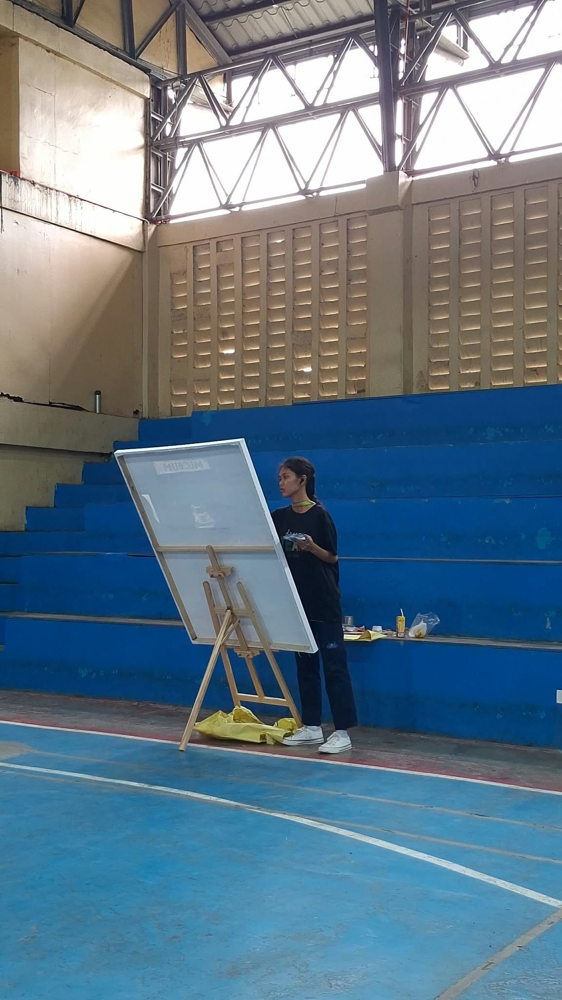
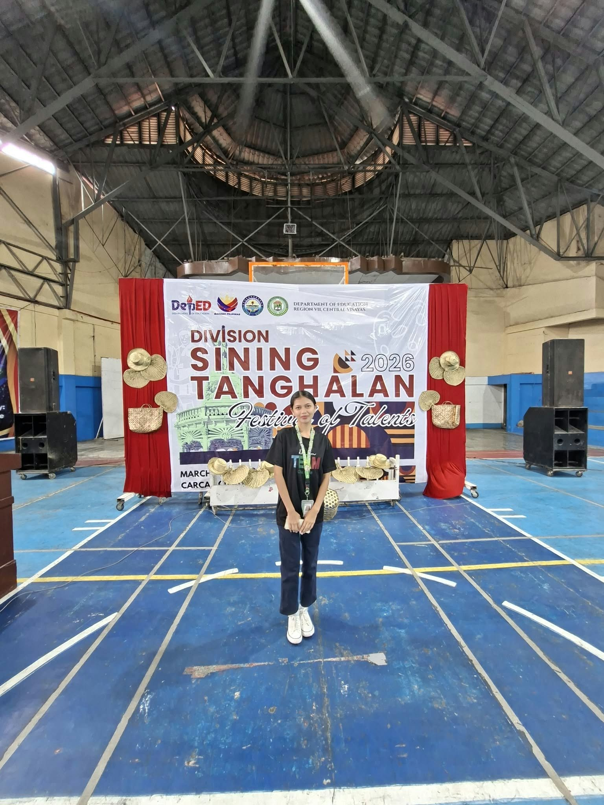
This was my first ever and last Divisions Fiestival of Talents. I participated contests outside school before but it's all about writing, but this contest is different because it is my first ever painting competition and I'm a bit hesistant on joining since I'm not that good at painting. Thankfully, I won 5th place here out of other schools in Carcar City.